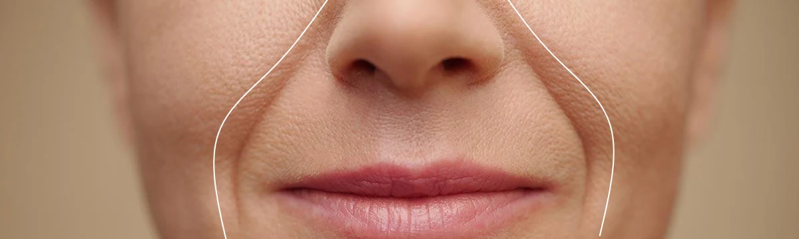
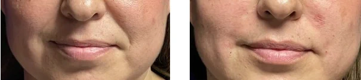

Nasolabial Fold?
How to Treat It?
If you are interested in us helping you with this topic:
Book Your Initial Consultation Now!If you are interested in us helping you with this topic:
Book Your Initial Consultation Now!The nasolabial fold, also known as marionette lines or nasolabial folds, are those deep lines that form between the nose and the corners of the mouth. This condition is common over time, as the skin loses collagen and elasticity. At our Aesthetic Center, we offer different treatments to improve and smooth the nasolabial fold, returning a more youthful appearance to the face.
At our Aesthetic Center, we offer a variety of treatments to reduce the nasolabial fold and restore a youthful and harmonious appearance. Among the most recommended are:

Yes, without treatment, nasolabial folds tend to deepen over time due to the continued loss of collagen and elasticity in the skin. To prevent the folds from becoming more noticeable, early treatment with hyaluronic acid fillers or Sculptra is recommended to maintain skin firmness and avoid its progression.
Treatments for the nasolabial fold provide visible results almost immediately in many cases, especially with the use of hyaluronic acid fillers. Skin volume and smoothness are restored, providing a fresher and more youthful appearance. Other treatments like Sculptra or Radiesse offer more gradual results, but with longer-lasting effects. At our Aesthetic Center, we work with each patient to personalize their treatment and achieve the best results.
